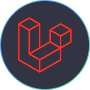

My Skill



Saya, Muhamad Khilqi Alfadillah, adalah seorang mahasiswa Informatika di Universitas Siliwangi yang memiliki ketertarikan besar pada teknologi dan desain digital. Dengan latar belakang di pemrograman dan sistem digital, saya terus mengeksplorasi bagaimana desain dapat meningkatkan pengalaman pengguna dan menciptakan solusi inovatif.
Saya memiliki keahlian di bidang UI/UX Design, Software Development, dan Data Analysis. Bagi saya, desain bukan hanya tentang tampilan yang menarik, tetapi juga bagaimana sebuah sistem dapat bekerja secara efisien dan memberikan pengalaman yang lebih baik bagi penggunanya.
Saya memiliki minat di bidang Front-end dan Back-end dengan penggunaan dan pemanfaatan dari framework bahasa pemrograman yang diperlukan untuk membuat project.
Saya memiliki pengalaman dalam pembuatan aplikasi berbasis Web untuk pengenalan villa yang berisikan informasi villa dan pemesanan menggunakan Laravel. Saya juga mengembangkan Point of Sale untuk toko komputer.
Proses pembuatan aplikasi menggunakan bahasa pemrograman PHP dengan framework Laravel serta database MySQL.
Proses pemeliharaan dan pengelolaan sistem informasi secara real-time.
"Website yang dibuat sangat responsif dan mudah digunakan. Sistemnya berjalan dengan lancar tanpa kendala, dan desainnya juga menarik! Sangat puas dengan hasilnya."
Adrian Wijaya, PT. Digital Solusi Indonesia
"Sangat profesional! Fitur yang dibuat sesuai dengan kebutuhan bisnis kami. Laravel benar-benar memberikan performa yang cepat dan aman. Terima kasih atas kerja samanya."
Risa Putri, SMK Teknologi Nusantara
"Website e-commerce kami kini lebih cepat dan stabil dibandingkan sebelumnya. Backend yang dibuat dengan Laravel sangat mudah di-manage. Kami sangat puas dengan hasilnya."
Budi Santoso, Toko Online Berkah Jaya
"Layanan yang diberikan sangat memuaskan! Website sekolah kami kini lebih modern dan user-friendly. Terima kasih telah membuat sistem yang handal dan mudah digunakan."
Rina Putri, SMK Teknologi Bandung